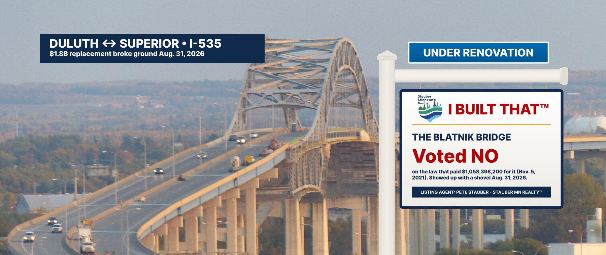

The “I Built That” Bridge — Blatnik Crossing, Duluth to Superior
Interstate 535 over the St. Louis Bay · Duluth, MN ↔ Superior, WI
A landmark renovation, financed over the agent’s objection
Presenting the Northland’s most celebrated renovation: the Blatnik Bridge, the aging Interstate 535 crossing that carries traffic between Duluth and Superior. Its replacement broke ground on August 31, 2026, a $1.8 billion project anchored by a $1,058,398,200 federal grant.
That grant came from the Bipartisan Infrastructure Law. On November 5, 2021, the House passed it 228–206, and listing agent Pete Stauber voted no (Roll Call 369). At the time, he said supporting the package would pave “a destructive and irreversible path towards socialism.”
When the grant was announced in January 2024, the agent posted: “This is a HUGE win for #MN08 and I was proud to advocate for these funds.” The post drew 2.3 million views and a community note. Governor Tim Walz replied that Stauber “voted against every screw, steel beam, and concrete pier in this bridge.”
At the 2026 groundbreaking, the agent stood alongside the Transportation Secretary and said replacing the bridge “has been a priority of mine.” The federal press release credited the money to dollars “the last administration set aside” — without naming the law that set them aside. In real estate, we call this staging.
Who paid for the bridge, and who posed with it
Vote from the official House Clerk record.
| Date | Event | Details | Price |
|---|---|---|---|
| Nov 5, 2021 | Financing offered | House passes the Bipartisan Infrastructure Law (H.R. 3684), 228–206; 13 Republicans vote yes. Agent Stauber votes NAY, calling it a path “towards socialism.”Roll Call 369 | $0 from agent |
| Jan 22, 2024 | Grant awarded | USDOT awards about $1 billion from the law’s bridge program to replace the Blatnik Bridge. Agent posts: “a HUGE win for #MN08.”Minnesota Reformer / Bring Me The News | $1.06B |
| Jan 22, 2024 | Inspection report | Walz: Stauber “voted against every screw, steel beam, and concrete pier in this bridge.” Community note added; post passes 2.3 million views.Minnesota Reformer | — |
| Jan 25, 2024 | Seller’s explanation | Agent releases a “fact check” video: passage of the law “did NOT automatically guarantee federal money for the Blatnik Bridge.”stauber.house.gov | — |
| Mar 2026 | Funds obligated | USDOT obligates the grant.USDOT | $1,058,398,200 |
| Aug 31, 2026 | Groundbreaking | Transportation Secretary Sean Duffy and Agent Stauber break ground. The federal release credits “the last administration” without naming the law.USDOT / The Daily Reporter | $1.8B project |
Three quotes, one bridge
What the agent says
“A destructive and irreversible path towards socialism.”Rep. Pete Stauber on supporting the infrastructure package, 2021 (via Bring Me The News)
“This is a HUGE win for #MN08 and I was proud to advocate for these funds.”Rep. Pete Stauber on X, Jan. 22, 2024
“Today’s groundbreaking marks an exciting milestone for the Northland. Replacing the Blatnik Bridge has been a priority of mine…”Rep. Pete Stauber, USDOT release, Aug. 31, 2026
What the public record shows
- Voted NAY on the Bipartisan Infrastructure Law, Nov. 5, 2021 (Roll Call 369)
- The law created the bridge program that paid $1,058,398,200 toward the new Blatnik
- Thirteen House Republicans voted yes. The agent was not one of them
- His defense: the law “did NOT automatically guarantee” the money — true of every grant program, including the one that funded this bridge
- Gov. Walz: he “voted against every screw, steel beam, and concrete pier in this bridge”
Items the agent would prefer you skip
Seller’s Disclosure Statement
- Did the agent vote to finance this bridge?No. The Blatnik grant came from the bridge program created by the Bipartisan Infrastructure Law. Agent Stauber voted against that law on November 5, 2021.
- Did the agent advocate for the grant?His office says yes: after Minnesota’s first application was rejected, he joined letters urging USDOT to reconsider. Advocating for money from a law you voted against is a legitimate service. We just think the brochure should mention the vote.
- Does the new federal press release mention the law?No. It says the money was set aside by “the last administration” and obligated “under Secretary Duffy.”
- Has the agent retracted the 2021 vote?His January 2024 “fact check” video explained his advocacy for the grant; it did not say the vote against the law was wrong.
Similar properties in this neighborhood


Public records cited in this listing
- House Clerk, Roll Call 369 (Nov. 5, 2021): H.R. 3684, 228-206; Stauber Nay
- Minnesota Reformer, “Stauber boasts about Blatnik Bridge; internet reminds him he voted against it”
- Bring Me The News, “Stauber touts Duluth bridge funding despite vote against infrastructure bill”
- Gov. Tim Walz on X, Jan. 2024
- Rep. Stauber, “Fact Check: Blatnik Bridge” (Jan. 25, 2024)
- USDOT, “Secretary Duffy Celebrates Groundbreaking of Blatnik Bridge” (Aug. 31, 2026)
- The Daily Reporter, “Construction starts on $1.8B Blatnik Bridge replacement” (Sept. 8, 2026)
- MnDOT, I-535 Blatnik Bridge project